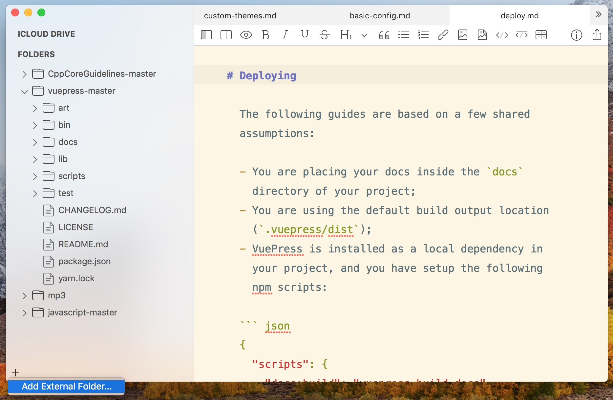
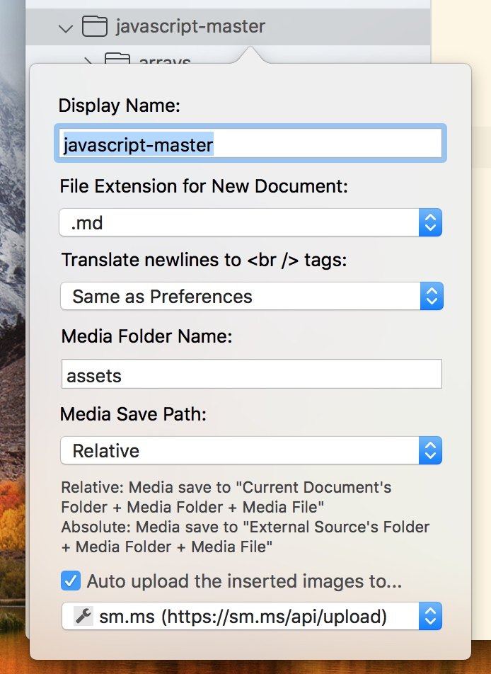
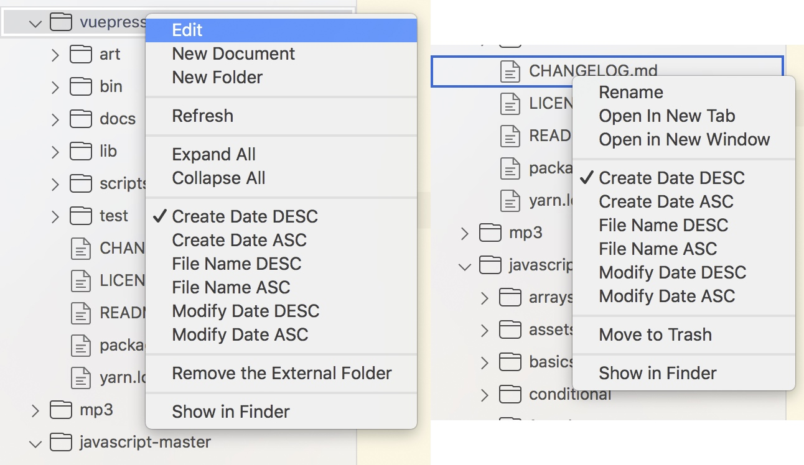

This article describes the detailed use of external mode, if you have not seen MWeb Basic use, I suggest you go and see.
Mac App Store Sandbox
Opening a Markdown document in a non-document library in MWeb, if there is a reference to a local image in the document, there is no way to display it and preview it in MWeb. This is because Apple's software on the Mac App Store (MAS) does not perform any operations on documents outside the software's own sandbox, and even reads it unless the user explicitly authorizes it. The way the user is authorized is to use the Open, Save dialog. For example, if you open a Markdown document with MWeb, then MWeb can get permission to read and write this document.
If you want to use MWeb to drag and drop the function of inserting images, you need to authorize the entire folder where the document is located to MWeb. When you import the folder, MWeb will automatically get the read and write permissions of this folder.
Of course, the introduction of folders into MWeb makes it easy to open and manage Markdown documents and view the tree structure of folders without using Finder.
Add a folder to External Mode
As shown below, press CMD + E to open the external mode, then click the “+” button in the left bottom corner to select the folder to be imported.

In addition, you can also drag and drop folders directly into the folder tree list on the left to import folders.
Another way is to drag and drop the folder directly into the MWeb icon to import the folder.
Configuring imported folders
After the folder is added, there is an important setting, which is to introduce the settings of the folder, you can right-click the imported folder, and then select Edit, it will display the following interface:

One setting is the "Display Name", which is specific to the imported folder. You will not modify the name of the folder if you modify the name. There are also several important settings that are related to inserting images. The first one is "Media Folder Name:". This is followed by the "Media Save Path:" option is associated with this, and there are only two options for "Absolute" and "Relative".
For example, if the folder I imported is A, then a file is under "A/folder/file.md", if I insert a picture called "pic.jpg" in "file.md" , the result of the different options is:
- Relative: The picture will be saved in “A/folder/media/pic.jpg”, and the generated Markdown will be:
. - Absolute: The picture will be saved in “A/media/pic.jpg”, and the generated Markdwon is:
![](/media/pic.jpg.
Another setting: "Automatically upload the inserted image to...". If this option is checked, the above settings will not work because the image you inserted will be automatically uploaded to the selected image upload service and then returned to the Markdown syntax.
Based on this feature, MWeb can support image insertion, preview and management of static website generation tools such as Octpress, Jekyll, hexo, gitbook, VuePress and so on.
Manage imported folders
After the folder is imported, you can use the right button to perform some common operations on the imported folders and files, as shown in the following figure.
